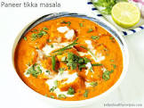

It is a spicy, aromatic and delicious Indian Curry made by either grilling paneer on the grill or simply on Tawa and later cooked in onion tomato gravy.
Paneer is also known as cottage cheese, so basically marinated paneer cubes are simmered in masala gravy to bring out the best flavors in the sabzi.
This Paneer Tikka Masala is one of the most famous Indian paneer curry that is a favorite of many.

Ingredients